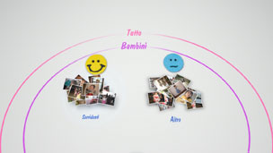
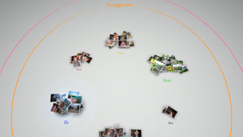

Organizzazione delle foto
Raggruppare le foto
È possibile selezionare eventi e quindi raggruppare le foto all'interno degli eventi selezionati utilizzando una delle opzioni di seguito descritte. Selezionare gli eventi che contengono le foto da raggruppare, premere il tasto  e selezionare
e selezionare  (Raggruppa). Se si desidera ridurre il numero di foto raggruppate, selezionare un gruppo o più gruppi che contengono le foto da raggruppare, quindi utilizzare un'altra opzione sotto (Raggruppa) per raggruppare le foto.
(Raggruppa). Se si desidera ridurre il numero di foto raggruppate, selezionare un gruppo o più gruppi che contengono le foto da raggruppare, quindi utilizzare un'altra opzione sotto (Raggruppa) per raggruppare le foto.
| Data / Ora | Raggruppa in base alla data e all'ora in cui le foto sono state scattate. |
|---|---|
| Numero di persone | Raggruppa in base al numero di persone nelle foto. |
| Fascia d'età | Raggruppa in base alla fascia di età relativa dei soggetti fotografati. |
| Espressione | Raggruppa in base all'espressione sul viso delle persone in foto. |
| Colore | Raggruppa in base ai colori delle foto. |
| Tipo di fotocamera | Raggruppa in base al modello di fotocamera utilizzata per scattare le foto. |
| Gioco | Raggruppa per titoli di giochi. |
| Album | Raggruppa in base agli album che sono stati creati in  (Foto) nella schermata XMB™. (Foto) nella schermata XMB™. |
Note
- Con [Seleziona tutto], tutte le foto in [Area raccolta] verranno raggruppate secondo l'opzione selezionata.
- Il raggruppamento si basa sull'analisi delle foto e, in alcuni casi, i risultati possono non essere quelli desiderati.
- È possibile creare un elenco di riproduzione delle foto raggruppate.
Esempi di foto raggruppate: foto di bambini sorridenti
1. |
Raggruppare le foto selezionando |
|---|---|
2. |
Selezionare il gruppo denominato [Bambini], quindi premere il tasto |
3. |
Selezionare  |
Esempi di foto raggruppate: foto con il cielo azzurro
1. |
Raggruppare le foto selezionando |
|---|---|
2. |
Selezionare il gruppo denominato [Paesaggio/Altro], quindi premere il tasto |
3. |
Selezionare  |
Eliminazione di foto
Per eliminare una foto o un album, selezionare la foto o l'album, premere il tasto , quindi selezionare  (Elimina)
(Elimina)
Nota
Se si eliminano le foto in [Area raccolta], le foto vengono eliminate anche dalla memoria di sistema del sistema PS3™.